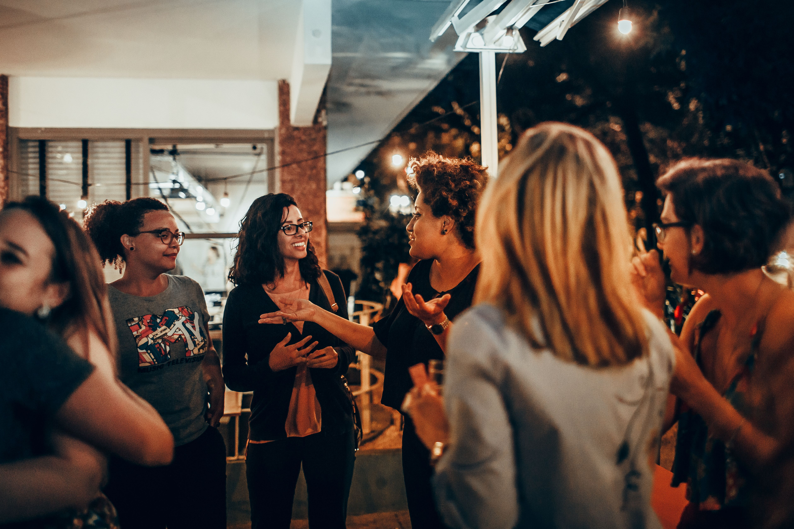

Um espaço de diálogo, acolhimento e fortalecimento para caminharmos juntas em meio aos desafios da vida.
Saiba mais sobre o projeto
Créditos da Foto: Helena Lopes
O Entre Nós é um projeto de apoio criado para fortalecer as rodas de conversa da Comunidade Evangélica Boa Semente, oferecendo um espaço de informação, acolhimento e compartilhamento de conhecimentos.
Nosso objetivo é facilitar o acesso a informações importantes sobre os direitos das mulheres, além de reunir materiais e indicar projetos e programas sociais que possam oferecer apoio em diferentes situações.
Aqui, você poderá encontrar conteúdos sobre temas que fazem parte da realidade de muitas mulheres, como gravidez, violência doméstica, direitos, vulnerabilidade social e outras situações que podem exigir informação, orientação e apoio.
Acreditamos que ter acesso à informação é um passo importante para reconhecer direitos, buscar ajuda e tomar decisões com mais segurança.
O Entre Nós foi pensado para ser um espaço simples, acessível e acolhedor, onde diferentes informações possam estar reunidas em um só lugar.
Você não precisa enfrentar tudo sozinha. Informação, acolhimento e apoio podem fazer a diferença.
Encontros para compartilhar, ouvir e fortalecer laços.
Conteúdos que edificam, informam e inspiram o seu dia.
"Juntas somos mais fortes."